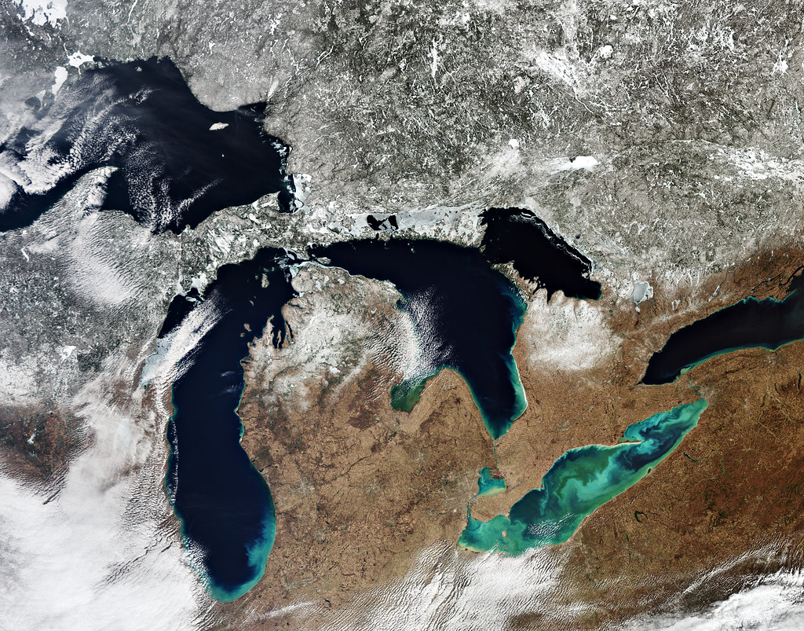
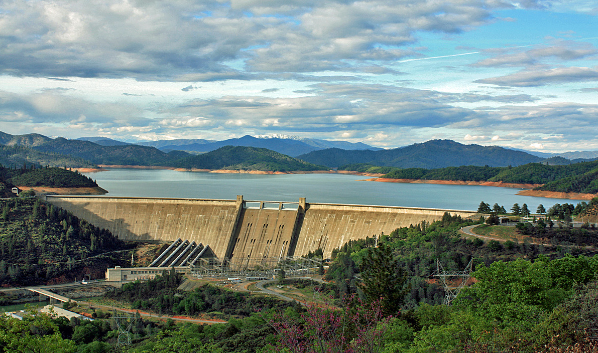
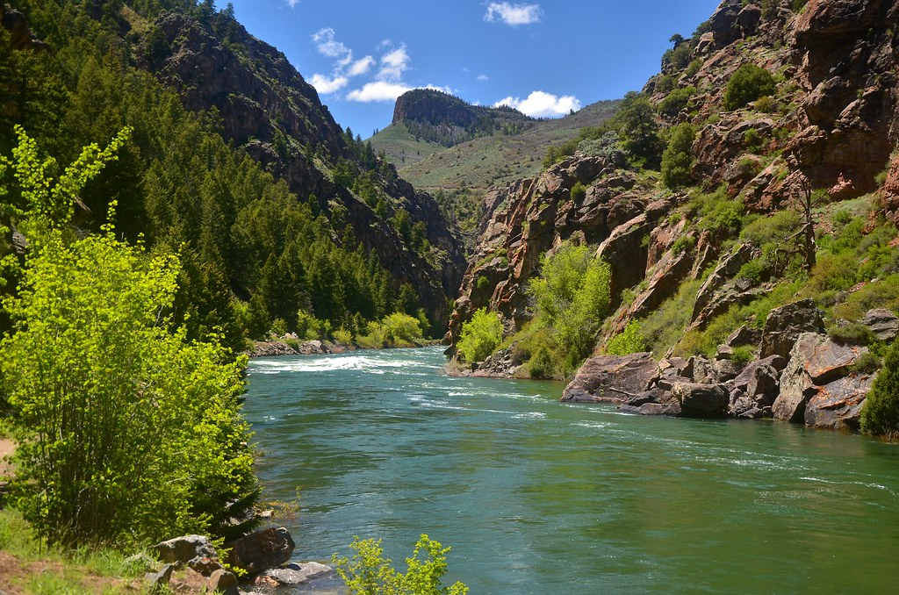

Great Lakes

The Laurentian Great Lakes are the largest freshwater system in the world, accounting for nearly 20% of global supply. Locally, the Great Lakes provide drinking water to 30 million people in major metropolitan coastal regions and support rich ecosystems and recreational and commercial activities. Anthropogenic climate change is affecting the lakes through warming temperatures and decreased ice cover. Lake levels have also experienced large shifts, due to changes in the three main variables that dictate levels: precipitation, evaporation, and runoff. The goal of our work is to understand more about how these three variables have changed historically to get a better understanding of historical lake levels and to better inform forecasts of future lake levels. Specifically, I am working on creating a better representation of historical runoff into each of the Great Lakes from 1950-2024 using a regional LSTM. We then use this new estimate of runoff to inform L2SWBM, a Bayesian water balance model that reconciles discrepancies between model and measurement-based estimates of each component while closing the Laurentian Great Lakes water balance.
California

Water systems in snow-dominated Mediterranean climate regions around the world are becoming increasingly vulnerable to hydroclimate extremes. California is one such region that is experiencing cycles of drought and flood that are becoming longer, more intense, frequent, and variable under a changing climate. An understanding of the impacts of climate change on California’s water system is further complicated by the natural climate variability of the region, which co-evolves with climate change to shape extremes in ways that are hard to predict and plan for. The vulnerabilities ultimately experienced by the system’s diverse users is dictated by how these extremes propagate through California’s complex water system, which features dynamic infrastructure and an intricate system of water rights. The challenge of comprehensively characterizing risk to users throughout California’s water system motivates the need to create new methods and frameworks that (1) generate scenarios of hydroclimate futures that capture a broad range of natural variability and plausible climate changes and (2) map the impacts of these scenarios through California’s institutionally complex water system down to the individual user level. My PhD focused on addressing three aspects of this problem:
Colorado

The Colorado Basin is a critical water resource for nearly 40 million people in the Southwestern US and Northern Mexico. Currently, the region is experiencing an unprecedented water shortage crisis brought upon a combination of increasingly dry conditions due to anthropogenic-driven warming and an increase in population and multi-sector demands. The future of the basin is deeply uncertain- it is unclear how climate change, water rights, demands, and changing infrastructure will interact to lead to vulnerabilities in the region. The state of Colorado currently uses StateMod, a highly resolved, open source, regional water allocation model developed and maintained jointly by the Colorado Water Conservation Board (CWCB) and the Colorado Division of Water Resources (DWR) to conduct water assessments and active planning and management in the state’s West Slope Basins, which contribute over 60% of the inflow to Lake Powell in an average year. My PhD work focused on two topics: